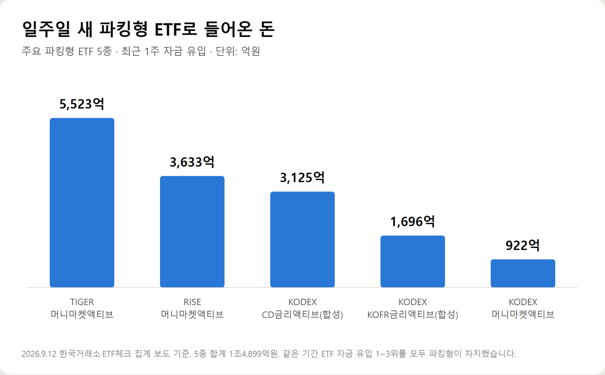
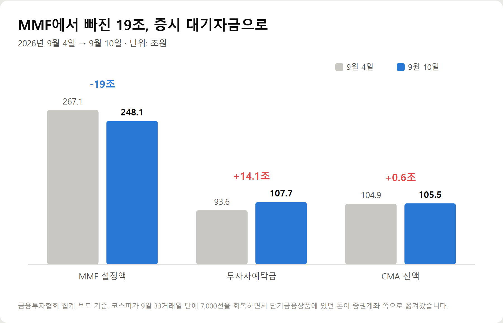
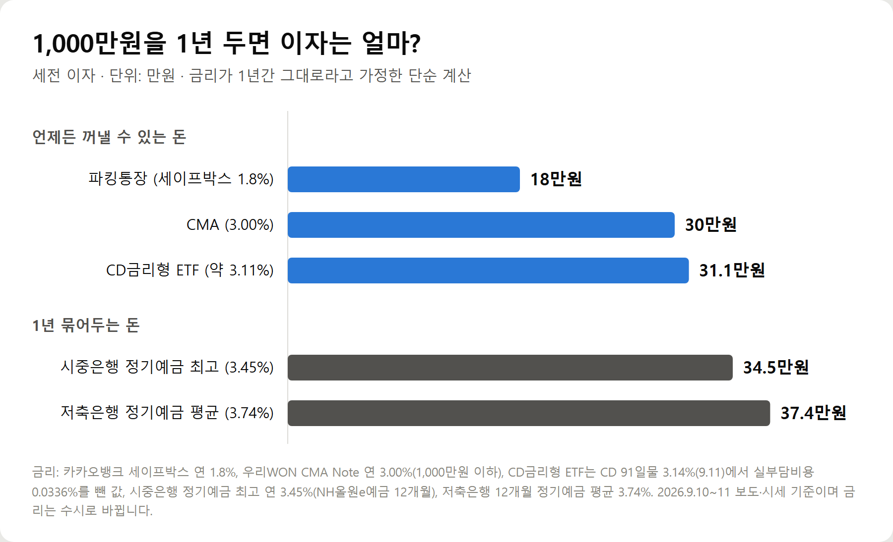
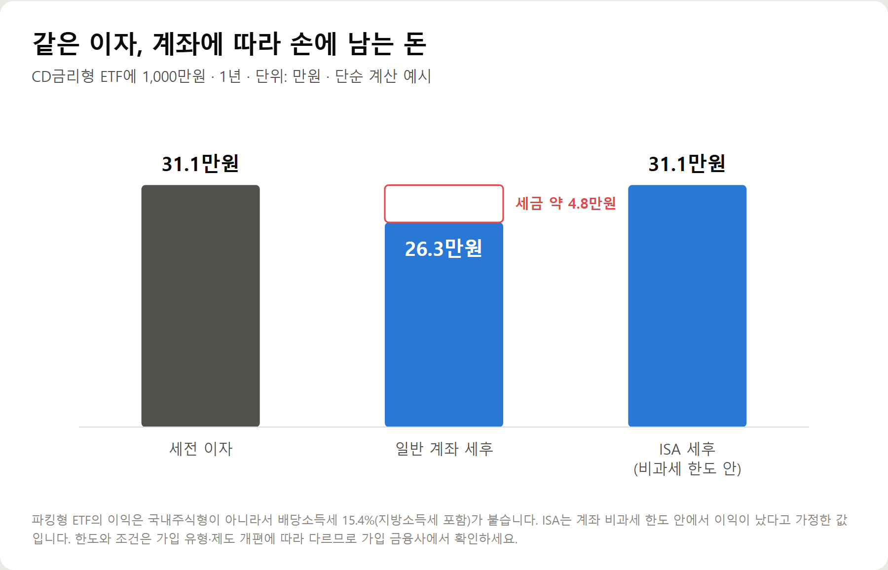

<meta charset="utf-8">
<title>파킹형 ETF 1주 1.5조 유입, MMF에선 19조 이탈 — 나의 투자 그리고 행복한 여행</title>
<meta name="description" content="2026년 9월 파킹형 ETF(CD금리·KOFR·머니마켓)에 일주일 새 1조4,899억원이 몰렸습니다. 1,000만원 기준 파킹통장·CMA·정기예금 이자 비교, 배당소득세 15.4%, 예금자보호 1억원, 건강보험료 기준까지 정리했습니다.">
<meta name="viewport" content="width=device-width, initial-scale=1">
<link rel="canonical" href="https://danielmoon82.github.io/moon/posts/parking-etf-2026-09-12.html">
<link rel="preconnect" href="https://fonts.googleapis.com">
<link rel="preconnect" href="https://fonts.gstatic.com" crossorigin>
<link rel="stylesheet" href="https://fonts.googleapis.com/css2?family=Hahmlet:wght@400;600;800&family=IBM+Plex+Mono:wght@400;500&family=IBM+Plex+Sans+KR:wght@300;400;500;600&display=swap">

<style>
  :root{
    --paper:#F2EEE6;--surface:#FAF8F3;--surface-2:#E7E1D5;
    --ink:#191510;--ink-2:#4A4235;--ink-3:#7D7364;
    --line:#D6CEBF;--line-soft:#E4DDD0;--accent:#B06A15;--accent-bright:#C2761A;
    --up:#E5484D;--down:#3B82F6;
    --f-display:"Hahmlet",'Nanum Myeongjo',"Apple SD Gothic Neo",serif;
    --f-body:"IBM Plex Sans KR","Apple SD Gothic Neo","Malgun Gothic",sans-serif;
    --f-mono:"IBM Plex Mono","SFMono-Regular",Consolas,monospace;
    --pad:clamp(20px,5vw,64px);
  }
  @media (prefers-color-scheme:dark){
    :root:not([data-theme="light"]){
      --paper:#0B1120;--surface:#121A2C;--surface-2:#1A2439;
      --ink:#E9EEF7;--ink-2:#A9B5C9;--ink-3:#72809A;
      --line:#26314A;--line-soft:#1D2739;--accent:#E8A33D;--accent-bright:#F0B45C;
    }
  }
  *{box-sizing:border-box;}
  body{margin:0;background:var(--paper);color:var(--ink);font-family:var(--f-body);
    font-weight:300;font-size:1rem;line-height:1.75;-webkit-font-smoothing:antialiased;}
  a{color:inherit;}
  img{max-width:100%;height:auto;}
  .wrap{max-width:760px;margin:0 auto;padding-inline:var(--pad);}
  .nav{position:sticky;top:0;z-index:20;background:color-mix(in srgb,var(--paper) 88%,transparent);
    backdrop-filter:saturate(180%) blur(12px);border-bottom:1px solid var(--line);}
  .nav-in{display:flex;align-items:center;justify-content:space-between;height:58px;}
  .brand{font-family:var(--f-display);font-weight:600;font-size:1rem;letter-spacing:-.02em;text-decoration:none;}
  .back{font-family:var(--f-mono);font-size:.72rem;color:var(--ink-3);text-decoration:none;}
  .article{padding-block:clamp(40px,7vw,72px) clamp(56px,9vw,96px);}
  .eyebrow{font-family:var(--f-mono);font-size:.68rem;letter-spacing:.16em;text-transform:uppercase;
    color:var(--accent);margin:0 0 14px;}
  h1{font-family:var(--f-display);font-weight:800;font-size:clamp(1.6rem,4.4vw,2.3rem);
    line-height:1.3;letter-spacing:-.03em;margin:0 0 16px;}
  .byline{font-family:var(--f-mono);font-size:.72rem;color:var(--ink-3);
    padding-bottom:24px;border-bottom:1px solid var(--line);margin-bottom:32px;}
  h2{font-family:var(--f-display);font-weight:600;font-size:1.25rem;letter-spacing:-.02em;margin:42px 0 14px;}
  h3{font-family:var(--f-display);font-weight:600;font-size:1.05rem;letter-spacing:-.02em;
    margin:30px 0 10px;padding-top:14px;border-top:1px solid var(--line-soft);}
  h3 .code{font-family:var(--f-mono);font-size:.7rem;font-weight:400;color:var(--ink-3);margin-left:6px;}
  p{margin:0 0 18px;color:var(--ink-2);}
  ul.checks{margin:0 0 18px;padding-left:20px;color:var(--ink-2);}
  ul.checks li{margin-bottom:8px;font-size:.94rem;}
  table{width:100%;border-collapse:collapse;font-size:.88rem;margin-bottom:8px;}
  th{font-family:var(--f-mono);font-size:.66rem;letter-spacing:.06em;text-transform:uppercase;
    color:var(--ink-3);text-align:right;padding:8px 6px;border-bottom:1px solid var(--line);}
  th:first-child{text-align:left;}
  td{padding:10px 6px;border-bottom:1px solid var(--line-soft);color:var(--ink-2);}
  td.num{font-family:var(--f-mono);text-align:right;font-variant-numeric:tabular-nums;}
  td.up{color:var(--up);} td.down{color:var(--down);}
  .scroll{overflow-x:auto;}
  figure{margin:22px 0;}
  figure img{display:block;border-radius:3px;background:var(--surface-2);}
  figcaption{margin-top:8px;font-family:var(--f-mono);font-size:.68rem;color:var(--ink-3);text-align:center;}
  .note{margin-top:34px;padding:16px 18px;border-left:3px solid var(--accent);
    background:var(--surface);border-radius:0 3px 3px 0;}
  .note p{margin:0;font-size:.85rem;color:var(--ink-3);}
  .foot{border-top:1px solid var(--line);background:var(--surface);padding-block:30px 38px;}
  .foot p{margin:0;font-size:.8rem;color:var(--ink-3);}
</style>

<nav class="nav">
  <div class="wrap nav-in">
    <a class="brand" href="../index.html">나의 투자 그리고 행복한 여행</a>
    <a class="back" href="../index.html#stocks">← 시황으로</a>
  </div>
</nav>

<main class="wrap article">
  <p class="eyebrow">Market</p>
  <h1>파킹형 ETF 1주 1.5조 유입, MMF에선 19조 이탈 — 2026년 9월 대기자금 흐름 정리</h1>
  <p class="byline">투자 · 2026-09-12 기준</p>

  <p>한 줄 요약: 증시가 7,000선을 오가는 사이 파킹형 ETF 5종에 일주일 새 1조4,899억원이 들어왔고, MMF에서는 닷새 만에 18조9,525억원이 빠져 증시 대기자금으로 옮겨갔습니다.</p>
  <p>기준금리 3.00%, CD 91일물 3.14%라는 금리 환경에서 '잠시 맡겨두는 돈'이 어디로 가는지, 그리고 개인이 목돈을 둘 때 어떤 선택지가 유리한지 2026년 9월 10~12일 기준 숫자로 기록합니다.</p>
  <h2>핵심만 먼저 — '언제 쓸 돈인가'가 기준입니다</h2>
  <p>파킹 수단을 고를 때 금리보다 먼저 볼 것은 그 돈을 언제 쓰느냐입니다.</p>
  <ul class="checks">
    <li>며칠~몇 주 안에 주식이나 다른 투자로 옮길 돈 → 파킹형 ETF 또는 CMA</li>
    <li>생활비·비상금처럼 아무 때나 꺼내야 하는 돈 → 파킹통장</li>
    <li>6개월~1년 동안 쓸 일이 확실히 없는 돈 → 정기예금이 이자가 더 높을 수 있습니다</li>
  </ul>
  <p>실제로 2026년 9월 기준 금리로 계산하면, 1년 묶어둘 수 있는 돈은 정기예금이 파킹형 ETF보다 이자가 많습니다. 아래에서 숫자로 보겠습니다.</p>
  <h2>1. 지금 파킹형 ETF에 무슨 일이 있나</h2>
  <p>2026년 9월 12일 한국거래소·ETF체크 집계에 따르면, 최근 일주일 동안 주요 파킹형 ETF 5종으로 1조4,899억원이 들어왔습니다.</p>
  <figure><figcaption>최근 1주 주요 파킹형 ETF 5종 자금 유입 (단위: 억원, 2026년 9월 12일 집계)</figcaption></figure>
  <p>가장 많이 들어온 상품은 TIGER 머니마켓액티브로 5,523억원입니다. RISE 머니마켓액티브 3,633억원, KODEX CD금리액티브(합성) 3,125억원이 뒤를 이었고, 이 셋이 ETF 자금 유입 1~3위를 차지했습니다.</p>
  <p>KODEX KOFR금리액티브(합성)에 1,696억원, KODEX 머니마켓액티브에 922억원이 더해졌습니다.</p>
  <p>배경은 두 가지입니다. 증시가 방향을 잡지 못하는 박스권이라는 점, 그리고 금리가 올랐다는 점입니다.</p>
  <p>한국은행은 7월에 이어 8월에도 기준금리를 올려 3.00%가 됐습니다. 파킹형 ETF가 따라가는 CD 91일물 금리는 9월 11일 기준 3.14%입니다. 대기자금을 잠시 굴려도 받을 수 있는 이자가 커진 것입니다.</p>
  <p>돈의 흐름은 한 방향만은 아닙니다. 금융투자협회 집계로 9월 4일부터 10일까지 MMF 설정액은 18조9,525억원 줄었고, 같은 기간 투자자예탁금은 14조1,073억원 늘었습니다.</p>
  <figure><figcaption>MMF 설정액·투자자예탁금·CMA 잔액 변화 (2026년 9월 4일→10일, 단위: 조원)</figcaption></figure>
  <p>코스피가 9일 33거래일 만에 7,000선을 회복하자 단기금융상품에 있던 돈 일부가 증권계좌로 옮겨가 매수 기회를 기다리는 모습입니다. 파킹형 ETF는 그 증권계좌 안에서 돈을 세워두는 자리로 쓰이고 있습니다.</p>
  <h2>2. 파킹형 ETF란? CD금리·KOFR·머니마켓형 차이</h2>
  <p>파킹형 ETF는 투자할 곳을 정하기 전까지 돈을 잠시 넣어두는 ETF입니다. 차를 잠깐 주차하듯 현금을 단기 금융상품에 넣어 이자를 받습니다.</p>
  <p>주식처럼 증권 계좌에서 사고팔고, 매일 이자만큼 가격이 조금씩 오르는 구조입니다. 이름에 'CD금리', 'KOFR금리', '머니마켓'이 들어가면 대부분 파킹형입니다.</p>
  <ul class="checks">
    <li>CD금리형 — 은행이 돈을 빌릴 때 발행하는 양도성예금증서(CD) 91일물 금리를 따라갑니다. 예: KODEX CD금리액티브(합성)</li>
    <li>KOFR금리형 — 국채 등을 담보로 하루짜리 돈을 빌리는 금리인 한국무위험지표금리(KOFR)를 따라갑니다. 예: KODEX KOFR금리액티브(합성)</li>
    <li>머니마켓형 — 단기 채권, 기업어음(CP) 같은 단기 금융상품에 직접 투자합니다. 예: TIGER·RISE·KODEX 머니마켓액티브</li>
  </ul>
  <p>CD금리형과 KOFR형은 금리를 '따라가도록' 설계된 상품이라 수익이 비교적 예측 가능합니다. 머니마켓형은 담은 채권과 어음에 따라 수익이 조금씩 달라집니다.</p>
  <p>이름 뒤에 붙은 '(합성)'은 운용사가 자산을 직접 사는 대신 증권사와 수익을 맞바꾸는 계약(스왑)으로 금리를 따라간다는 뜻입니다. 계약 상대 증권사의 신용도도 결국 상품의 일부라는 점은 알고 있는 편이 좋습니다.</p>
  <h2>3. 1,000만원 넣으면 1년 이자는 얼마? — 파킹통장·CMA·정기예금 비교</h2>
  <p>같은 1,000만원을 1년 동안 둔다고 가정해 세전 이자를 계산했습니다. 금리가 1년 내내 그대로라는 가정의 단순 계산이라, 실제 결과는 금리 변화에 따라 달라집니다.</p>
  <figure><figcaption>1,000만원을 1년 두었을 때 세전 이자 비교 (단위: 만원, 2026년 9월 10~11일 금리 기준 단순 계산)</figcaption></figure>
  <ul class="checks">
    <li>파킹통장(카카오뱅크 세이프박스 연 1.8%) — 약 18만원</li>
    <li>CMA(우리WON CMA Note, 1,000만원 이하 연 3.00%) — 약 30만원</li>
    <li>CD금리형 ETF(CD 91일물 3.14%에서 실부담비용 0.0336% 차감, 약 3.11%) — 약 31.1만원</li>
    <li>시중은행 정기예금 12개월 최고(NH올원e예금 연 3.45%) — 약 34.5만원</li>
    <li>저축은행 12개월 정기예금 평균(연 3.74%) — 약 37.4만원</li>
  </ul>
  <p>숫자에서 보이듯, 언제든 꺼낼 수 있는 돈 중에서는 CD금리형 ETF와 CMA가 높은 편입니다. 반면 1년 묶어둘 수 있다면 정기예금이 3~6만원 더 많습니다.</p>
  <div class="note"><p>파킹형 ETF는 '가장 이자가 높은 곳'이 아니라 '언제든 꺼낼 수 있으면서 이자가 괜찮은 곳'입니다.</p></div>
  <p>은행 정기예금 금리도 오르는 중입니다. NH농협·신한·우리·하나은행이 9월 들어 대표 정기예금 금리를 0.1~0.3%포인트 올렸고, 5대 은행 정기예금 잔액은 8월 말 1,005조2,319억원으로 처음 1,000조원을 넘었습니다.</p>
  <h2>4. 한눈에 비교 — 입출금·예금자보호·세금·한도</h2>
  <p>이자 말고도 네 가지가 다릅니다. 목돈일수록 이 차이가 더 중요해집니다.</p>
  <p>■ 파킹통장 (은행·저축은행 수시입출금)</p>
  <ul class="checks">
    <li>입출금: 즉시</li>
    <li>예금자보호: 금융회사별 1인당 1억원까지</li>
    <li>세금: 이자소득세 15.4%</li>
    <li>주의: 최고 금리는 소액 구간이나 우대조건에만 붙는 경우가 많습니다</li>
  </ul>
  <p>■ CMA (증권사)</p>
  <ul class="checks">
    <li>입출금: 즉시에 가깝고, 증권계좌와 연결돼 바로 투자 가능</li>
    <li>예금자보호: 종금형 등 일부를 빼면 대부분 해당 없음</li>
    <li>세금: 이자·배당소득세 15.4%</li>
    <li>주의: 금액 구간별로 금리가 다른 상품이 있습니다 (예: 1,000만원 초과분은 금리 하향)</li>
  </ul>
  <p>■ 파킹형 ETF (CD금리·KOFR·머니마켓)</p>
  <ul class="checks">
    <li>입출금: 장중에 팔 수 있지만 현금 인출은 매도 후 2영업일 뒤</li>
    <li>예금자보호: 없음</li>
    <li>세금: 매매차익·분배금 모두 배당소득세 15.4%</li>
    <li>장점: 금액 한도가 없어 억 단위도 같은 조건으로 굴러갑니다</li>
  </ul>
  <p>■ 정기예금</p>
  <ul class="checks">
    <li>입출금: 만기까지 묶임 (중도해지하면 약정 금리보다 크게 낮아짐)</li>
    <li>예금자보호: 금융회사별 1인당 1억원까지</li>
    <li>세금: 이자소득세 15.4%</li>
    <li>장점: 금리가 가입 시점에 확정됩니다</li>
  </ul>
  <h2>5. 파킹형 ETF 넣기 전 꼭 확인할 것 — 많이들 놓치는 부분</h2>
  <p>여기부터가 실제로 목돈을 넣을 때 차이를 만드는 부분입니다.</p>
  <p>① 예금자보호 한도는 이제 1억원입니다 — 단, 파킹형 ETF는 대상이 아닙니다</p>
  <p>2025년 9월 1일부터 예금자보호 한도가 5,000만원에서 1억원으로 올랐습니다. 24년 만의 상향이고, 이전에 가입한 예금에도 자동 적용됩니다. 아직 5,000만원 기준으로 설명하는 글이 많으니 헷갈리지 않는 게 좋습니다.</p>
  <p>반대로 파킹형 ETF는 예금이 아니라 펀드라서 예금자보호가 없습니다. CD금리형·KOFR형은 구조상 가격 변동이 매우 작지만, '보호받는 돈'과 '안전하게 설계된 돈'은 다른 개념입니다.</p>
  <p>② 팔아도 돈은 이틀 뒤에 들어옵니다</p>
  <p>ETF를 팔면 현금을 출금할 수 있는 날은 매도일로부터 2영업일 뒤입니다. 주식을 사는 데는 바로 쓸 수 있지만, 이사 잔금이나 병원비처럼 날짜가 정해진 지출에는 이 이틀이 문제가 될 수 있습니다. 연휴가 끼면 더 길어집니다.</p>
  <p>③ 짧게 넣었다 빼면 이자보다 비용이 클 수 있습니다</p>
  <p>파킹형 ETF의 하루 이자는 아주 작습니다. 연 3%라면 1,000만원 기준 하루 약 800원입니다. 매매수수료가 있는 계좌에서 며칠만 넣었다 빼면 수수료와 호가 차이가 이자를 까먹을 수 있습니다. 수수료가 낮은 계좌인지 먼저 확인하세요.</p>
  <p>④ 보수는 '실부담비용'으로 봅니다</p>
  <p>광고에 나오는 총보수보다 기타비용과 매매중개수수료까지 더한 실부담비용이 실제로 빠지는 돈입니다. 코스콤 ETF CHECK 2026년 9월 2일 기준 주요 파킹형 ETF의 실부담비용은 연 0.02~0.06%대였습니다. 차이는 작지만 억 단위라면 무시할 수준은 아닙니다.</p>
  <p>⑤ 분배형인지 무분배형인지 확인합니다</p>
  <p>매달 분배금을 주는 상품은 받을 때마다 세금이 떼어지고, 무분배형은 이자가 가격에 쌓였다가 팔 때 한 번에 과세됩니다. 매달 현금이 필요한지, 모아서 굴릴지에 따라 고르면 됩니다.</p>
  <h2>6. 세금과 건강보험료 — 40·50대가 특히 봐야 할 부분</h2>
  <p>파킹형 ETF는 국내주식형 ETF가 아닙니다. 그래서 매매차익에도, 분배금에도 배당소득세 15.4%(지방소득세 포함)가 붙습니다.</p>
  <figure><figcaption>CD금리형 ETF 1,000만원·1년 기준 세전·세후 비교 (단위: 만원, 단순 계산 예시)</figcaption></figure>
  <p>1,000만원을 넣어 1년에 약 31.1만원이 생겼다면, 일반 계좌에서는 약 4.8만원이 세금으로 빠지고 약 26.3만원이 남습니다.</p>
  <p>금액이 커지면 두 가지 기준을 챙겨야 합니다.</p>
  <ul class="checks">
    <li>금융소득종합과세 — 이자와 배당을 합친 금융소득이 한 해 2,000만원을 넘으면 다른 소득과 합산해 과세됩니다</li>
    <li>건강보험료 — 지역가입자와 피부양자는 금융소득이 연 1,000만원을 넘으면 초과분이 아니라 전액이 건강보험 소득에 잡힙니다. 피부양자는 합산 소득이 연 2,000만원을 넘으면 자격을 잃고 지역가입자로 바뀝니다</li>
  </ul>
  <p>연 3% 금리라면 원금 약 3억3,000만원에서 이자가 1,000만원 수준이 됩니다. 퇴직금이나 집 매도대금을 한 곳에 오래 두는 경우라면 충분히 닿을 수 있는 금액입니다. 은퇴 후 자녀의 피부양자로 올라가 있는 분이라면 특히 확인해야 합니다.</p>
  <p>그래서 파킹형 ETF를 ISA나 연금저축·IRP 같은 절세계좌에 담는 분이 많습니다.</p>
  <ul class="checks">
    <li>ISA(개인종합자산관리계좌) — 계좌 안 순이익 가운데 비과세 한도까지는 세금이 없고, 넘는 부분은 9.9%로 분리과세됩니다</li>
    <li>연금저축·IRP — 인출할 때까지 과세가 미뤄지고, 연금으로 받으면 낮은 세율이 적용됩니다</li>
  </ul>
  <p>다만 ISA는 의무 보유기간이 있고, 연금계좌는 중도 인출 시 불이익이 있습니다. 비과세 한도와 납입 한도는 가입 유형과 제도 개편에 따라 달라지므로, 개설 전에 가입할 금융회사에서 본인 기준으로 확인하는 것이 정확합니다. '며칠 뒤 꺼낼 돈'이라면 절세계좌보다 일반 계좌가 편할 수 있습니다.</p>
  <h2>7. 이런 분에게 맞고, 이런 분에게는 맞지 않습니다</h2>
  <p>파킹형 ETF가 잘 맞는 경우입니다.</p>
  <ul class="checks">
    <li>주식을 팔고 다음 매수 기회를 기다리는 돈이 증권계좌에 있는 경우</li>
    <li>파킹통장 우대 한도를 넘는 큰 금액을 단기간 두어야 하는 경우</li>
    <li>몇 주~몇 달 뒤 쓸 곳은 있지만 날짜가 딱 정해지지 않은 경우</li>
  </ul>
  <p>다른 선택이 나은 경우입니다.</p>
  <ul class="checks">
    <li>1년 이상 쓸 일이 없는 돈 — 정기예금 금리가 더 높을 수 있습니다</li>
    <li>지출 날짜가 정해진 돈 — 2영업일 출금 시차가 부담이 됩니다</li>
    <li>예금자보호가 꼭 필요한 돈 — 1억원까지 보호되는 예금이 맞습니다</li>
    <li>증권 앱 사용이 익숙하지 않은 경우 — CMA나 파킹통장이 관리하기 쉽습니다</li>
  </ul>
  <h2>자주 묻는 질문</h2>
  <p>Q. 파킹형 ETF도 원금 손실이 날 수 있나요?</p>
  <p>원금이 보장되는 상품은 아닙니다. 다만 CD금리형·KOFR형은 단기 금리를 매일 쌓아가는 구조라 가격 변동이 매우 작습니다. 손실 가능성보다는 예금자보호가 없다는 점, 합성형은 계약 상대방이 있다는 점을 알고 넣는 것이 중요합니다.</p>
  <p>Q. 파킹통장과 파킹형 ETF 중 어느 쪽이 이자가 더 많나요?</p>
  <p>2026년 9월 금리 기준으로는 CD금리형 ETF(약 3.11%)가 인터넷은행 파킹통장(1.8%)보다 높습니다. 다만 저축은행 파킹통장 중에는 소액 구간에서 더 높은 금리를 주는 상품도 있어, 금액이 작다면 파킹통장이 나을 수 있습니다.</p>
  <p>Q. 파킹형 ETF 세금은 얼마인가요?</p>
  <p>매매차익과 분배금 모두 배당소득세 15.4%입니다. 국내주식형 ETF처럼 매매차익이 비과세되지 않습니다. 금융소득이 연 2,000만원을 넘으면 종합과세 대상이 됩니다.</p>
  <p>Q. 팔면 돈은 언제 찾을 수 있나요?</p>
  <p>매도 후 2영업일 뒤에 출금할 수 있습니다. 같은 증권계좌 안에서 주식이나 다른 ETF를 사는 데는 바로 쓸 수 있습니다.</p>
  <p>Q. CD금리형과 KOFR형 중 무엇이 나은가요?</p>
  <p>둘 다 단기 금리를 따라가는 상품이라 성격이 비슷합니다. 따라가는 금리가 다를 뿐입니다. 수익률 차이는 크지 않으므로 실부담비용, 순자산 규모, 분배 방식(월분배·무분배)을 보고 고르는 편이 실용적입니다.</p>
  <p>Q. ISA 계좌에 담아도 되나요?</p>
  <p>국내 상장 ETF라 ISA와 연금저축·IRP에 담을 수 있습니다. 다만 절세계좌는 보유기간·인출 조건이 있으니, 곧 꺼낼 돈인지 오래 둘 돈인지 먼저 정하고 계좌를 고르세요.</p>
  <h2>정리하면</h2>
  <p>박스권 증시와 금리 상승이 겹치면서 파킹형 ETF에 일주일 새 1조4,899억원이 들어왔습니다. 기준금리 3.00%, CD 91일물 3.14% 환경에서 대기자금을 잠시 굴리기 좋은 수단인 것은 맞습니다.</p>
  <p>하지만 1,000만원을 1년 둔다고 계산하면 정기예금이 3~6만원 더 많습니다. 예금자보호도 없고, 팔고 나서 이틀 뒤에 돈이 들어옵니다.</p>
  <p>그래서 순서는 이렇습니다. 쓸 시점을 먼저 정하고, 그다음 금리를 비교하고, 마지막으로 어떤 계좌에 담을지 정합니다.</p>
  <p>목돈을 오래 둘 계획이라면 금융소득 2,000만원과 건강보험료 1,000만원 기준도 함께 보셔야 합니다. 다음 글에서는 금융소득이 건강보험료에 어떻게 반영되는지 구체적인 계산으로 정리하겠습니다.</p>
  <div class="note"><p>이 글은 공개된 보도와 시장 자료를 정리한 것으로 특정 상품의 매수·매도나 가입을 권유하지 않습니다. 금리와 상품 조건은 수시로 바뀌며, 투자 판단과 그에 따른 결과의 책임은 본인에게 있습니다.</p></div>
  <p>※ 기준 시점: 파킹형 ETF 자금 유입 2026년 9월 12일 한국거래소·ETF체크 집계, MMF·투자자예탁금 2026년 9월 10일 금융투자협회 집계, CD 91일물 2026년 9월 11일, 예금 금리 2026년 9월 10일 보도 기준. 예금자보호 한도 1억원은 2025년 9월 1일 시행(금융위원회·예금보험공사). 이자 계산은 금리가 1년간 유지된다고 가정한 단순 계산입니다.</p>
</main>

<footer class="foot">
  <div class="wrap"><p>나의 투자 그리고 행복한 여행 · 투자 판단의 참고 자료일 뿐, 매수·매도를 권유하지 않습니다.</p></div>
</footer>
